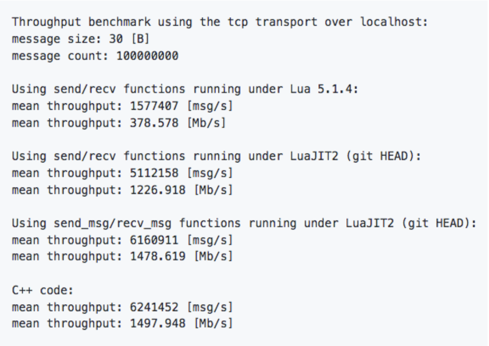

Možnosti komunikácie medzi procesmi¶
Kvôli problémom s kompabilitou medzi platformami je vhodné, ak ďalší vývoj projektu
bude smerovať ku komunikácii medzi procesmi prostredníctvom IPC alebo RPC.
Cieľom je tak úplne izolovať časť, ktorá pre svoju
činnosť vyžaduje programovacie jazyky Lua a Terra. Táto časť bude kontajnerizovaná. Kontajner
bude obsahovať interpreter LuaJIT z distribúcie Luapower. Kontajner bude ďalej obsahovať
všetky závislosti a Lua moduly potrebné k činnosti. Potrebné je tak zabezpečiť komunikáciu
medzi kontajnerom a hostiteľským systémom. Taktiež je nevyhnutné navrhnúť spôsob serializácie
údajov.
Do budúcna je možné túto komunikáciu riešiť buď na úrovni komunikácie v rámci lokálneho stroja, alebo je možné upraviť projekt tak, aby využíval vzdialený server. Z hľadiska povahy tejto komunikácie je potrebné zabezpečiť vysokú priepustnosť.
Kontajner by bol založený na Lua CI Image, ktorý je použitý taktiež vo vývojovom prostredí Devenv. V kontajneri by teda bežal Layouter, ktorý by prepočítaval súradnice. Tie by potom poskytoval C# modulu GraphCore. Týmto spôsobom je možné zároveň projekt odľahčiť, nakoľko by nebolo potrebné využívať C++ moduly, ktoré sprostredkúvajú komunikáciu medzi C# a Lua vrstvou.
Komunikácia¶
Komunikáciu medzi kontajnerom a hostiteľským systémom je v princípe možné vykonať buď medziprocesovou komunikáciou (IPC), alebo vzdialeným volaním procedúr (RPC). Zároveň je potrebné brať do úvahy kompatibilitu medzi platformami. Nakoľko kontajner využíva operačný systém Linux Ubuntu, nie je možné zabezpečiť kompatibilitu so všetkými paradigmami.
Z hľadiska rýchlosti sú jednotlivé paradigmy zoradené zostupne od najrýchlejšej po najpomalšiu :
- Zdieľaná pamäť (shared memory/shm)
- Message Queue
- Unix domain sockets
- Pipe
- FIFO (named pipe)
- TCP socket
Dôležité je poznamenať, že rozdiel medzi FIFO a TCP socketmi predstavuje približne 16%.
Ako bolo vyššie uvedené, kvôli kompatibilite nie je možné použiť všetky paradigmy. Z hľadiska kompatibility je najvýhodnejšie použitie TCP socketu. Prostredníctvom TCP socketu je následne možné prejsť na použitie vzdialeného servera bez potreby modifikácie klientskej časti.
Na zabezpečenie komunikácie existuje viacero knižníc, ktoré sa líšia rýchlosťou, podporovanými vzormi komunikácie, prípadne použitím brokerov (centrálnych uzlov). Pre potreby projektu je nevyhnutné, aby bola dostupná knižnica pre programovacie jazyky Lua a C#.
ZeroMQ¶
ZeroMQ (tiež známe ako ØMQ, 0MQ, alebo zmq) predstavuje rámec, ktorý umožňuje prenášať správy medzi viacerými uzlami. Podporuje viaceré spôsoby prenosu - v rámci procesu, medzi procesmi, TCP a multicast.
ZeroMQ ďalej implementuje mechanizmus High Water Mark, ktorý predstavuje pevný limit maximálneho
počtu správ v rade, po naplnení ktorého dôjde k blokovaniu alebo zahadzovaniu ďalších prijatých správ.
Výhodou riešenia je kvalitná dokumentácia. K dispozícii je ako verzia
pre jazyk C#, tak aj pre jazyk Lua. Lua-zmq
predstavuje binding nad ZeroMQ verzie 2. Knižnica Lzmq je binding
nad verziami 3 a 4.
Obe knižnice je možné inštalovať prostredníctvom správcu Luarocks.
V spojení s interpreterom LuaJIT by mal rámec poskytovať dostatočnú rýchlosť aj pri komunikácii
prostredníctvom TCP socketu. Podľa dostupných informácii je možné dosiahnuť rýchlosť
až 1 478.619 Mb/s.

V repozitároch Lzmq-guide a Zguide je možné nájsť viacero ukážkových implementácií pre rôzne programovacie jazyky.
Nižšie je možné vidieť ukážkové riešenie jednoduchej klient-server komunikácie prostredníctvom Unix domain socketov. Server bol vytvorený v jazyku C a klient v jazyku Lua.
// C Hello World server #include <zmq.h> #include <stdio.h> #include <unistd.h> #include <string.h> #include <assert.h> int main (void) { // Socket to talk to clients void *context = zmq_ctx_new (); void *responder = zmq_socket (context, ZMQ_REP); int rc = zmq_bind(responder, "ipc:///src/test"); assert(rc == 0); while (1) { char buffer [10]; zmq_recv (responder, buffer, 10, 0); printf ("Received Hello\n"); sleep (1); // Do some 'work' zmq_send (responder, "World", 5, 0); } return 0; }
-- -- Lua Hello World client -- Sends "Hello" to server, expects "World" back -- -- Author: Robert G. Jakabosky <bobby@sharedrealm.com> -- local zmq = require "lzmq" local context = zmq.init(1) -- Socket to talk to server print("Connecting to hello world server…") local socket = context:socket(zmq.REQ) socket:connect("ipc:///src/test") for n=1,10 do print("Sending Hello " .. n .. " …") socket:send("Hello") local reply = socket:recv() print("Received World " .. n .. " [" .. reply .. "]") end socket:close() context:term()
ZeroMQ poskytuje tiež viacero vzorov komunikácie :
Request-reply¶
Prepojenie množiny klientov s množinou služieb. V tomto prípade sa jedná o RPC a model distribúcie úloh.
Publish-subscribe¶
Vzor prepája množinu producentov s množinou konzumentov. Ide o model distribúcie údajov.
Pipeline¶
Potrubie, ktoré spája viacero uzlov. Môže mať viacero krokov a slučiek. Jedná sa o model paralelnej distribúcie a zberu.
Exclusive pair¶
Vzor prepája práve 2 sockety. Ide o model prepojenia dvoch vláken v procese.
Serializácia¶
Pred samotným odoslaním je potrebná serializácia údajov. Čím efektívnejšia bude serializácia, tým efektívnejšie
môže prebiehať celá komunikácia, obzvlášť pokiaľ by výsledné riešenie komunikovalo so vzdialeným serverom.
Medzi najbežnejšie formáty údajov patrí JSON a XML. Existuje viacero knižníc pre jazyky C# aj Lua.
JSON¶
JSON predstavuje jednoduchý formát na výmenu údajov. Patrí medzi pomerne
ľahko čitateľné a zapisovateľné notácie. Má taktiež širokú podporu. Je založený na 2 základných štruktúrach, a to
kolekcia párov kľúč-hodnota (objekt, záznam, štruktúra, slovník a pod.) a usporiadaný zoznam hodnôt (pole, vektor,
zoznam a pod.).
Pre programovací jazyk Lua je možné použiť knižnicu priamo z distribúcie Luapower, konkrétne
CJSON.
MessagePack¶
MessagePack je rámec na serializáciu údajov. Podobne ako JSON, umožňuje výmenu údajov
medzi viacerými uzlami a programovacími jazykmi. Oproti formátu JSON by mal byť MessagePack efektívnejší a rýchlejší,
nakoľko serializované údaje majú menšiu veľkosť.
Menšia veľkosť so sebou prináša aj niekoľko obmedzení, ktoré sa týkajú možnej veľkosti údajových typov. Jednotlivé
obmedzenia, rovnako ako aj podporované údajové typy je možné nájsť v
špecifikácii.
Pre programovací jazyk Lua je k dispozícii knižnica lua-MessagePack,
ktorá by mala byť podľa autora rýchla v kombinácii s interpreterom LuaJIT. Rovnako aj túto knižnicu je možné
inštalovať prostredníctvom Luarocks.
Pre C# je potom k dispozícii knižnica msgpack-cli.
Ukážka RPC¶
Repozitár 3DSoftviz obsahuje adresár examples, v ktorom sa nachádza ukážka možností implementácie mechanizmov
RPC s použitím ZeroMQ a MessagePack.
Za týmto účelom bol modifikovaný Lua CI Image, ktorý obsahuje všetky
potrebné závislosti.
Ukážka obsahuje jednoduchú implementáciu serverovej časti v jazyku Lua a klientskej časti v jazyku C#.
Serverová časť počúva na porte TCP/49155. Prijatá správa je následne rozbalená prostredníctvom knižnice MessagePack.
Rozbalená správa má potom formu tabuľky, ku ktorej obsahu je možné pristupovať prostredníctvom číselných indexov.
V ukážke sa očakáva správa v nasledujúcom tvare.
local message = {} message[1] = "command" message[2] = "params" message[3] = "result"
Všetky atribúty tabuľky sú reprezentované vo forme reťazcov.
Jednotlivé lokálne funkcie sú uložené v tabuľke s názvom _L, čím je možné zabezpečiť volanie funkcie na základe jej názvu
vo forme reťazca. Rovnakým spôsobom je možné uchovávať tiež lokálne premenné.
local _L = {} _L["extract"] = extract
Pre účely ukážky bola vytvorená funkcia s názvom extract, ktorá spracováva parametre a následne volá funkciu extractor.extract,
ktorej výstup je odovzdaný vo forme návratovej hodnoty.
local function extract(params) local path = params[1] return extractor.extract(path, astMan) end
Funkcia je potom volaná bezpečným spôsobom prostredníctvom funkcie pcall. Funkcií sú tiež odovzdané požadované parametre.
local command = message[1] local params = message[2] local status, result = pcall(_L[command], params)
Pokiaľ atribút command obsahuje reťazec "end", dôjde k nastaveniu premennej cyklu na hodnotu false, server upovedomí
klienta a program skončí.
if command == "end" then loop = false request[3] = "Server stopping" socket:send(mp.pack(request)) break end
Do atribútu result môže byť vložený výsledok. Pre účely ukážky je atribút reprezentovaný vo forme reťazca. Do
budúcna by však bolo vhodnejšie tento atribút reprezentovať na klientskej strane vnoreným objektom, takže na
strane servera by mal atribút formu vnorenej tabuľky. Odpoveď je následne odoslaná klientovi.
message[3] = json.encode(result) socket:send(mp.pack(message))
Klientska časť je implementovaná v programovacom jazyku C#. Na úspešnú komunikáciu medzi klientskou a serverovou časťou s využitím serializácie prostredníctvom knižnice MessagePack, je potrebné vytvoriť objektové štruktúry, ktoré budú dodržané ako na klientskej, tak aj serverovej strane. Dodržanie štruktúry sa týka hlavne použitých údajových typov. Štruktúra objektu, ktorý je mapovaný na tabuľku uvedenú vyššie je možné vidieť na nasledujúcej ukážke.
public class RemoteCall { public string functionName { get; set; } public string[] functionParams { get; set; } public string result { get; set; } }
Atribút functionName zodpovedá atribútu označenému ako command, functionParams zodpovedá params a result je mapovaný na result.
Takýmto spôsobom je možné zabezpečiť bezproblémové mapovanie C# objektov na tabuľku v jazyku Lua. Rovnako je bezproblémové
spätné mapovanie tabuľky na C# objekt, ku ktorého atribútom je možné pristupovať štandardnou bodkovou notáciou.
MessagePackSerializer serializer = MessagePackSerializer.Get(rpc.GetType()); MemoryStream toUnpack = null; byte[] responseFromServer = client.ReceiveFrameBytes(); toUnpack = new MemoryStream(responseFromServer); RemoteCall unpacked = (RemoteCall)serializer.Unpack(toUnpack); Console.WriteLine(unpacked.result);
Spustenie¶
Na spustenie ukážky je potrebné prostredie Docker a IDE Visual Studio.
Pre spustenie serverovej časti ukážky je potrebná inštalácia vývojového prostredia
Devenv. Je teda potrebné postupovať podľa krokov uvedených v dokumentácii.
Repozitár obsahujúci súbory potrebné pre vývojové prostredie devenv by mali byť naklonované do rovnomenného adresára, t.j. devenv.
Tento adresár po úspešnej inštalácii obsahuje ďalej adresár luadev. Do tohto adresára je potrebné naklonovať repozitár
3DSoftVis_Remake. Pre spustenie serverovej časti je potrebné prejsť
do adresára examples/rpc a následne príkazom lua server.lua program spustiť.
-
Tip
- Na spustenie nie je potrebné klonovanie celého repozitára. Pokiaľ už repozitár bol naklonovaný, stačí nakopírovať
adresár
examplesdo adresáraluadev.
- Na spustenie nie je potrebné klonovanie celého repozitára. Pokiaľ už repozitár bol naklonovaný, stačí nakopírovať
adresár
Na spustenie klientskej časti je potrebné otvoriť súbor examples/rpc/Lua_rpc/Lua_rpc.sln. Solution je potrebné následne
v IDE Visual Studio zostaviť a spustiť.
Poznámka¶
Ako testovací vstup je v súčasnosti pre účely ukážky použitý Moonscript projekt. Použitie Lua projektu momentálne nie je možné,
pravdepodobne kvôli vzniku cyklov vo výslednom grafe, v dôsledku čoho nie je možné nad týmito údajmi vykonať serializáciu ani
prostredníctvom knižnice ZeroMQ, ani CJSON. Po odstránení cyklov by so serializáciou nemal byť problém.
Tento problém sa vyskytuje pri priamom volaní funkcie extractor.extract, ktorá je súčasťou submodulu luadb.extraction.extractor.
LuaServer¶
Aktuálne je v module luaserver využívaná knižnica MessagePack, ZeroMQ na komunikáciu a CJSON na serializáciu správ. LuaServer je samostatný repozitár na GitLabe, ktorý je zahrnutý aj vo vývojovom prostredí devenv na vetve feature/krocka-include-luaserver. Väčšina funkcionality sa v tomto momente nachádza na vetve feature/souc-luaserver.
Poznámky¶
K dipozícii je viacero vývojových rámcov umožňujúcich komunikáciu medzi viacerými uzlami. Jedným z riešení môže byť gRPC, ktoré však nemá k dispozícii oficiálnu knižnicu pre jazyk Lua.
Ďalšou alternatívou môže byť komunikácia prostredníctvom JSON-RPC. Údaje by sa prenášali vo formáte JSON. Nižšie je možné vidieť ukážkové volania.
{"method":"doString","params":["asd = {ma=12,mk=45}"], "id":12} {"method":"doString","params":["asd = \"asd\\nxncbv\""], "id":13} {"method":"getObject","params":["asd"], "id":14} {"method":"doString","params":["aasd()"]} {"method":"doString","params":["gr = getGraph(0)"]} {"method":"getObject","params":["gr"]} {"method":"doString","params":["aasd()"]} {"method":"doString","params":["UMLVALUE = getSequenceDiagram(0, 68)"]} {"method":"getString","params":["UMLVALUE"]} {"method":"doString","params":["print(\"asd\\nxncbv\")"], "id":13}
Viacero užitočných informácií, vrátane implementácie funkcií doString, getString a getObject, rovnako aj použitie exportovaných
funkcií, je možné nájsť v poznámkach v OneNote.
Užitočné linky¶
- https://github.com/luapower
- https://luarocks.org/modules/neopallium/lua-zmq
- https://luarocks.org/modules/moteus/lzmq
- http://zguide.zeromq.org/lua:all
- https://github.com/zeromq/libzmq
- https://github.com/goldsborough/ipc-bench
- https://github.com/grpc
- https://docs.docker.com/engine/reference/run/#ipc-settings---ipc
- https://github.com/msgpack
- https://luarocks.org/modules/fperrad/lua-messagepack